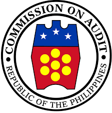

Audit Management System · COA Quirino
Privacy Policy
Effective 17 October 2026
The Audit Management System (AMS) is an internal work tool of the Commission on Audit, COA Quirino. It is used only by personnel whose Gmail accounts have been registered by the AMS Administrator.
What Google sign-in shares with AMS
When you sign in with Google, AMS receives only your name, Gmail address and Google's confirmation that the address is verified. AMS does not read your email, contacts, files or any other Google data, and it does not receive your Google password.
How it is used
- To check that your Gmail is registered in AMS and to open the screens allowed for your role and team.
- To record who made each change in AMS, as part of the audit trail.
Where the information is kept
AMS records (users, teams, the LGU list and the work entered in AMS) are kept in the AMS database, a Google Sheet owned by the COA Quirino AMS account, and on the devices of signed-in users so the app can work offline. The information is not sold, shared with advertisers or used for any purpose other than the work of the audit teams.
Access and removal
Only registered users can sign in, and each sees only what their role and team allow. To have your access removed or your details corrected, contact the AMS Administrator. Signing out of AMS removes your sign-in from that device.
Contact
AMS Administrator, COA Quirino · lgasquirinoaudit.records@gmail.com